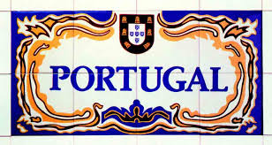

<!DOCTYPE html>
<html>
    <head>
        <meta charset="utf-8">
        <meta name="viewport" content="initial-scale=1, maximum-scale=1">
        <title>Travel Magazine</title>
        <link href="http://maxcdn.bootstrapcdn.com/font-awesome/4.2.0/css/font-awesome.min.css" rel="stylesheet">
        <link href='http://fonts.googleapis.com/css?family=Raleway:300' rel='stylesheet' type='text/css'>
        <link rel="stylesheet" href="css/normalize.css">
        <link rel="stylesheet" href="css/style.css">
    </head>
    <body>
        <script type="text/x-handlebars">

            <div class="container">
                <div class="row">
                    <div class="left col">

                        <h1> <i id="menu-icon" class="fa fa-bars"></i> Travel Magazine</h1>

                        <ul id="menu-list" class="active">
                            <li>{{#link-to 'articulo1'}}Decameron explorer Colombia{{/link-to}}</li>
                            <li>{{#link-to 'articulo2'}}New York{{/link-to}}</li>
                            <li>{{#link-to 'articulo3'}}The South of Florida{{/link-to}}</li>
                            <li>{{#link-to 'articulo4'}}Hagia Sophia Museum{{/link-to}}</li>
                            <li>{{#link-to 'articulo5'}}Paris{{/link-to}}</li>
                            <li>{{#link-to 'articulo6'}}Terrifying Travels{{/link-to}}</li>
                            <li>{{#link-to 'articulo7'}}The Nasca Lines{{/link-to}}</li>
                            <li>{{#link-to 'articulo8'}}The best beaches in the world{{/link-to}}</li>
                            <li>{{#link-to 'articulo9'}}World’s famous souvenirs{{/link-to}}</li>
                            <li>{{#link-to 'articulo10'}}The Subway, Zion National Park-Utah{{/link-to}}</li>
                            <li>{{#link-to 'articulo11'}}Panama{{/link-to}}</li>
                        </ul>
                    </div>

                    <div class="right col">
                        {{outlet}}
                    </div>
                </div>
            </div>

        </script>

        <script type="text/x-handlebars" id="index">
            <div class="index"></div>
        </script>

        <script type="text/x-handlebars" id="articulo1">
            <h2>Decameron explorer Colombia</h2>
            <span class="author">Andres Serrano</span>
            <p>Decameron has begun to have the best plans of traveling in Colombia; these company has the best tourist sites in Colombia. It’s important to consider that Colombia has the best natural sites in the world, sites like: San Andres Island, Cartagena, Amazonas, Santa Marta, Laguna de Tota and has the best Hotels for example: Hotel Mar Azul, Hotel Decalodge and Royal hotel which were founded by Santo Domingo group. Also, decameron has workers with the best attitude to satisfy our needs.</p>
            <p>Decameron has excellent and delicious food, for example: you can enjoy delicious snacks all day long including at the middle night and enjoy breakfast, lunch, dinner all in buffet. When you buy a plan with Decameron all the food that you like to eat its including.</p>
            <p>Decameron is recognized in Colombia because has the best activities to share with  family, for example: with Decameron you can enjoy activities as see all the site and its tourist places, drive jet sky and dance on a journey in the yate bar. These activities are including in your plan and these activities are the best and the funniest. </p>
            <p>Decameron has the best benefits for your family and you when you buy the complete plan, benefits like:  enjoy unlimited food, complete activities, plane tickets, shuttle service and the best attention and services. If you pay for this plan, you take the best decision because you’ll enjoy the best vacations.</p>
            <p>In conclusion if you travel to Colombia, in Decameron hotel you can enjoy a fantastic experience. People today prefer to travel with Decameron because has the best services, the best Hotels, the best food and the best attention, for a low price. Decameron also is more complete than others companies traveling.</p>
        
            

        </script>

        <script type="text/x-handlebars" id="articulo2">
            <h2>New York</h2>
            <span class="author">Carolina Garzon</span>

            <p> 
                According to the principal newspapers and encyclopedias, New York “the big 
                apple” is a big city, it’s one of the most populous and the most important city in the    
                world. Additionally, it is one of people’s most favorite city, especially for young    
                people. One reason is that this place has significant impact upon commerce,    
                finance, media, art, fashion, research, technology, education and entertainment    
                around the world. On the other hand, New York has been described as the tourist    
                capital; that is a vital industry for New York City which has witnessed a growing    
                combined volume of international and domestic tourists receiving approximately 49    
                million tourists in 2010, 51 million in 2011 and a record 54 million tourists in 2013.   
                Tourism has continued to generate an increasing economic impact upon the city,   
                exceeding us$55 billion annually. I think that New York should be to visit for   
                everybody, despite I don’t know it, I’ve been reading about this place and it looks   
                fabulous. I want to go and I hope to go the next year. Below I want to show you a   
                little of what you can find in this place.
            </p>
            <p>The Statue Of Liberty: everyone around the world had heard of this, but very few 

                people know their history. The Statue Of Liberty was a gift from France to the 

                United States, when U.S.A fulfilled 100 years of its independence in 1886 wiht the 

                French Revolution, it’s located in Liberty Island in the New York Harbor, in the 

                middle of New York Harbor in Manhattan, New York City. If you want to go to visit 

                to the Statue of Liberty, the best way is to stand on the ferry that leaves from 

                Battery Park in Lower Manhattan; it’s pretty cheap.</p>

            <p>Times Square: it is a major commercial intersection and a neighborhood in 

                Midtown Manhattan, New York city. Times Square is one of the world’s most 

                visited tourist attractions, hosting over 39 million visitors annually; approximately 

                330.000 people pass through Times Square daily, many of whom are either 

                tourists or people working in the area; one of the main characteristics of this place 

                is the large number of giants screens and neon signs that work all day and night 

                and that make the place to became a marvelous place. addition to that,  this place 

                has been featured countless times in literature, on television, in films including the 

                1980 film Times Square, which featured a punk rock/new wave soundtrack in 

                music videos and recently in video games, such as Grand Theft Auto IV, in which a 

                recreation of the Times Square area is included in the game’s fictional "Liberty 

                City" setting, and Battlefield 3.</p>
            <p>Central Park: is an urban park in the central part of the borough of Manhattan. It 

                was initially opened in 1857, on 778 acres (315 ha) of city-owned land (later 

                expanding to its current size of 843 acres (341 ha). In 1858, Frederick Law 

                Olmsted and Calvert Vaux won a design competition to improve and expand the 

                park with a plan they titled the "Greensward Plan". Construction began the same 

                year, continued during the American Civil War further south, and was completed in 

                1873. It was designated a National Historic Landmark in 1962. The Park was 

                managed for decades by the New York City Department of Recreation and Parks 

                and is currently managed by the Central Park. Central Park, home to over 25,000 

                trees, has a stand of 1,700 American elms, one of the largest remaining stands in 

                the northeastern U.S. A wooded section of the park called "The Ramble" is popular 

                among birders. Many species of woodland birds, especially warblers, may be seen 

                in The Ramble in the spring and fall. Today, Central Park is the most visited urban 

                park in the United States as well as one of the most filmed locations in the world.</p>
                            <p>Well, these were a little of New York, and these are some few places that you can 

                visit, but if you want more, you can visit the magazine Time out where you can find 

                more places or if you need to know about its Culture and contemporary life, Art, or 

                more about its economy you can find that in different newspapers like The New 

                York Times or the New Yorker. But   I think that nothing is better than you go  to 

                know, I am sure that you will not regret; by the way I’ve heard  Christmas in New 

                York is Wonderful.</p>

                
                
                
        </script>

        <script type="text/x-handlebars" id="articulo3">
            <h2>The South of Florida</h2>
            <span class="author">Daniel Sanchez</span>
            <p>Why should you travel to the South of Florida? Many people think that Florida is just one  of the most famous parks and some beaches but it is much more than that. In addition, Florida has an important feature in its location relation to the rest of the country because part of the South doesn’t has too many weather variations and for this reason  it has constant warm weather  accompained by beaches sorrunded by the charm Atlantic Ocean. Five  days are not enough to visit Florida and you can do it with your family because it is not important how old or young you are to enjoy the incredible places and experiences.</p>
            <p>The most recognized and most frequently visited city in the South of Florida is of course Orlando. From Magic kingdom to magical spa treatments including massages, manicures, pedicures, facials and so on, Orlando flashes with the promise of adventure and relaxation. You can spend all day exploring thematic parks like Universal Studios or Epcot, swim with the dolphins at Sea World or scream like crazy on the amazing roller coaster gardens Bush, to enjoy the beatiful beaches like cocoa  beach or visiting the facilities of NASA on Cape Canaveral.</p>
            <p>In my opinion, one of the most recognized cities and the hottest one is Miami. There’s night lifestyle due to the presence of Latin people characterized by their culture and personality. You can also see some properties of the celebrities like Shakira’s island or enjoy the amazing art deco architecture and if you love sports, the famous Miami heat equipment can offer you entertaiment.</p>
            <p>On the other hand, an amazing option is the beautiful canal-laced city, Fort Lauderdale. Its main attraction is undoubtly its incredible beaches and amazing sunny weather, excellent for aquatic fun. The city offers perfect family holiday park offering such as everglades and the Museum of Since and Discovery. Channels, boats and yachts are part of the lifestyle of Fort Lauderdale.</p>
            <p>To conclude, it is important to highlight the beauty of this spectacular place to travel, enjoy with family, meet, and so on that only you will find in the wonderful South of Florida. Exciting holidays can become one of the best life experiences to remember forever. For all these reasons I would support the view that this paradise is a dream come true which can fulfill the expectations of the traveler and also satisfy many desires. I have come to the conclusion that every moment there is unique and will be unforgettable forever.</p>

            
            
            
            
        </script>

        <script type="text/x-handlebars" id="articulo4">
            <h2>Hagia Sophia Museum</h2>
            <span class="author">Ingrid Zabala Rodriguez</span>
            <p>Have you ever visited a place and you have felt inside a fairy tale? This is Hagia Sophia museum in Turkey. Turkey has been the 8th tourist destination in the world since 2008. The museum Santa Sofia has been the most important and representative place.  It was built by Justine in 535 BC,. Otherwise, this has been the real representative of the Turkey history because it has changed through the time along with the city first Catholic, after Muslim, and at the present this has changed to museum where everybody can visit. For this reason the tourist is going to find amazing fusion between religions and art in the same place. Hagia Sophia seduces travelers and gives them a world of sensations that they might not expect to find.</p>
            <p>Hagia Sophia has been an unmistakable masterpiece; it had been once the largest church ever built until San Petre was built in Roma. Hagia Sophia was design and built by Artemio and Isodore’s Architect, they achieved to raise its massive and amazing dome almost 56 meters high and 33 in diameter, consequently they created a large, airily, light, surrounding space that the tourist can enjoy with a magical atmosphere because Hagia Sophia was built with golden tones and bright colors of marble walls, detailed mosaic many of which have backgrounds of gold and floors. Hagia Sophia has assembled all Byzantine architecture and luxury, beauty and Ottoman art where give travelers a world of sensations with its mix of colors and shapes.</p>
            <p>The emperor Justine had the idea that Hagia Sophia was going to overcome Temple of Salomon Jerusalem. When he saw it finished, he was impressed by the wonder of Hagia Sophia, then, he couldn’t   avoid to say: “ Salomon I have surpassed”.  The first Hagia Sofia was built for Catholic Church. For 900 years Hagia Sofia had been the center of Orthodox Christianity until 1453 when Turkey was invaded by Ottomans by “Sultan Mehmed” , after 500 years it become a jewel for the Muslim world and as the grand Sultan’s mosque.  Since 1935 Hagia Sophia was converted in a museum of Turkish and become one of the most beautiful, amazing and important monuments of the world with its architecture and historical richness.</p>
            <p>If you decide to know this amazing museum you need to travel to Istanbul.  This city has been organized by the tourist then everybody talks different languages but the English has been the most common. The official currency is Turkish pounds, but you can find exchange in all places, and the Colombian people have never needed a visa for traveling to this country.  
Inside the museum you are going to have two options: the personal guide or audio guide. The audio guide is as good as the personal guide because all the museum has been organized by section and number. The travelers can choose the number and listen to the explications. The cost of the entrance ticket to the museum is 15 euros. This isn’t as expensive as other world museum. It’s important that tourists try to go in the first time in the morning because some time the tourist wait some hours for you can go inside. The Hagia Sophia offers all facilities for the travelers where they can enjoy this amazing place.  </p>
            <p>The Hagia Sophia is a fascinating, stunning museum, after its has been firs Eastern Orthodox Cathedral, after a Catholic Cathedral and a Mosque. Tourists could feel a little confused upon the entry, but inside they will feel all the art and religions that have grown in the same place and the travelers can feel in different ages in the same place.  For more than 1450 years, The purpose of the museum has been to attract people whether believers or unbelievers depending on the time of the story and now a days this purpose has continued where a lot of people cross around the world only for visit and fall in love of its mystery.</p>
        
            
            
        </script>

        <script type="text/x-handlebars" id="articulo5">
            <h2>Paris</h2>
            <span class="author">Laura Pico</span>
            <p>Paris is one of the most beautiful cities in the world. The most visited and probably the most romantic because Paris is a special city in Europe to know a lot of interesting places. Paris is the capital of France also known as the city of love. This city is magical with a special charm that is felt at very corner, square or just in each of its places. This place is the most popular tourist destination on the world because you can see a lot of beautiful and historical monuments for example Eiffel tower, the Bridge of Arts and the Arc of triomphe.</p>
            <p>The Eiffel tower is the most fantastic symbol of Paris and the most visited monument in the world. The Eiffel tower was created for the exhibition in Paris in 1889.People visiting the tower always want to know the inside. People can access either for lift or stairs but it’s more difficult when you choose the stairs because the stairs have 1665 steps. This is cheaper that the lift. The Eiffel tower offers a different perspective. You can feel a lot of emotions for example, when you go to Paris in New Year’s Eve. It’s spectacular because people can get a view of the other people on the street and watch the fireworks. Also the Eiffel tower has a restaurant on the 11 floor. It’s beautiful and elegant but it’s necessary to plan because you only can go to the restaurant with reservation. It’s a fantastic monument.</p>
            <p>Other popular tourist and romantic destination in Paris is the Bridge of the Arts. It’s a romantic and special bridge to know. In this place people put padlocks with another person to promise eternal love. The bridge name is Passel Elle Leopold or only the Bridge of the Arts. If you want to go to the bridge. You can put a padlock with you mom, boyfriend, girlfriend, best friend or any other person that you love. Some people customize their padlocks with pictures, names, drawings and dates. It’s very fun and interesting .That tradition of the padlocks and the bridge comes from a legend.  The legend says that if a couple put a padlock on any surface of the bridge and then thrown the key away in the river their love will last forever. People have visited the bridge on purpose, for this reason it’s a magical bridge to have a romantic time.</p>
            <p>Another attraction is the Arc of triomphe. It’s the most representative monument in Paris because this monument represents the victories of the French. It’s a cultural place to visit. The monument was created by Napoleon in 1806. When you want to go to Arc of the triomphe to go inside and climb at the top, it’s necessary to pay a ticket and climb the 286 steps .It’s great. Also, into the Arc you can see a small museum and data about the construction of the monument. It’s an interesting and special monument to visit.</p>
            <p>I think, Paris is a great and fun city to know different places, mores and monuments. Paris is a fantastic and interesting city to visit with your family , friends and other people because when you want to visit Paris .You can find a lot of great and amazing places to see and know. Paris is a bright, calm, classy and friendly place to have an unforgettable experience because Paris has the most wonderful and romantic places. In Paris you can find places to fill with happiness and beautiful memories.</p>
        
            
            
            
        </script>

        <script type="text/x-handlebars" id="articulo6">
            <h2>Terrifying Travels</h2>
            <span class="author">Luis Cruz</span>
            <p>Traveling can be a funny but also a scary experience, each year creepy destinations are more attractive for  tourists. By fear or curiosity many people are tempted to visit these places around the world,  Akodessewa Fetish Market, Sedlec Ossuary, and Winchester Mansion are destinations that we recommend for holidays.</p>
            <p>The Akodessewa fetish market is the world’s largest fetishes and voodoo market, this place is located in Togo, Africa. The Practice of voodoo began in West Africa, before being brought to America by slaves. When We talk about fetishes, we refer to the talismans that are used in voodoo medicine, objects like crocodile heads, hands of chimpanzees, snakes and bones. Thus, the market looks like a giant pharmacy, and although there’s nothing wrong with that,  but can be difficult to stay calm between the tables where the smiling cheetahs heads, hyenas or humanoids skulls are  exposed as they were fruits</p>
            <p>Maybe you do not agree with black magic. Then, we recommend you the Sedlec Ossuary, one of the most famous chapel in the world it is below the Cemetery Church of All Saints located in Czech Republic. This place was built in 1400 but it was not until 1870 that was ordered to use the bones to decorate the place. The peculiar thing about this place is that it contains approximately 40,000 human skeletons artistically arranged to form decorations and furnishings for the chapel. The decoration is amazing and is a place you should visit  in  fact the ossuary is open daily.</p>
            <p>As final destination we have the Winchester Mystery House, one of the most incredible  and unique buildings in the world, it is located in San Jose, California. Sarah Winchester built this place for 38 years non stop until the time of her death. According  to the legend it was built as a maze to prevent the spirits molest Sarah. The house has 160 rooms, including 40 bedrooms, 6 kitchens, 2 basements, 476 doors. Currently this strange construction has become a tourist attraction, definitely a place you should visit, but don’t forget the recommendation of the guides: do not get separated from the group in the  tour, nobody can guarantee that if you get lost, you can be found again.</p>
            <p>Whatever the destination is, you can be sure that it will meet the expectations of the terrifying. each place offers a different experience that is worth knowing I recommend you to attend these attractions with a guide that can offer you all the necessary information of the place, having a comfortable and creepy trip.</p>
        
            
            
            
        </script>

        <script type="text/x-handlebars" id="articulo7">
            <h2>The Nasca Lines</h2>
            <span class="author">Nadia Patricia Rodríguez Pardo</span>
            <p>I’ve always been fascinated by the famous and mysterious Nazca lines. These lines are located in a desert of Peru between Jumana and Palpa.  Nazca Lines are discovered by Pedro Ceniza Leon in 1947. However some scientists say these were drawn by Nazca culture and other scientists say it is made by alien space crafts. These lines are created from simple figures until complicated figures. Some researchers say these lines are symbols for runways. If you want to know, you can see these figures from sky, you can pay usd 50 for a tourist service airplane.</p>
            <p>These lines are drawn on the desert floor with appearance human, animals, vegetables and varied geometric. According to the research these lines have between 5 to 30 centimeters depth and the floor has a double layer of soil. The first layer with red color and the second layer with yellow color according to the photos these figures are interesting for example the monkey 95m long, the spider 32m long, the hummingbird 168m long and the astronaut 40m long also in the figures, there are frequent repetitions, the most prominent example is in four figures with 17 km distance between them.</p>
            <p>The geoglyphs are on one of the hottest area in this area never rain and there is so much erosion. In the desert of Nazca rain less than 1 liter per m2 annual and the composition of the soil has significant amounts of gypsum preventing the wind can move or displace stones, actually the winds from the pacific are deflected by the high temperature prevailing in the desert. Definitely this is a place appropriate to draw anything that does not want to erase.</p>
            <p>The hypothesis of UFOs is based on a figure of a man with a helmet of an astronaut. At the time were made the geoglyphs astronauts were not known also the theories claim that the figures recorded from ufo ships with great precision using some kind of laser beam and especially a lot of figures have exact dimension. However they are messages left by aliens and earthlings must decipher.</p>
            <p>The most serious theory is that built Nazca lines were made for gods in the sky maybe on a communication system. These lines only can be seen from the sky why? If we stand on earth these lines are not understood. Maybe the aliens enter in communication with the Nazca Culture because some mountains are cut for to draw these figures. According to investigation these figures have codes for communication with aliens in case of a natural disaster. Last year the journal “new york times” asked Ms. Maria Reich, the scientist Germany said: “We will never have all the answers”. How the lines were constructed is a Mystery.</p>
        
            
            
            
        </script>

        <script type="text/x-handlebars" id="articulo8">
            <h2>The best beaches in the world</h2>
            <span class="author">Nelson Camilo Chingaté Quintero</span>
            <p>When people go on vacation, they love to travel. The principal places that people love to visit are some beaches. The principal reason people visit the beaches is that they like to relax because most of the beaches are beautiful and have spectacular landscapes that makes them attractive and relaxing. In this world there are a lot of beaches in each continent, it is wonderful that people can choose which beach to visit. Now, which beaches are the best in the world?</p>
            <p>To begin with Cook Islands, they are 15 small islands in the South Pacific Ocean. They are located in the middle of Hawaii and New Zealand. In these beaches people can find a big jungle where some excursion can be done by visitors. The color of the sea is aqua and the sand in the beaches is white. The customs, food, dances and songs are shared by residents to visitors. In addition, in the islands people don’t have contact with technology and the problems of big cities. If you want to swim among corals, be relaxed and have adventures  like Robinson Crusoe, these islands are the best.</p>
            <p>Tossa de Mar is the second beach recommended. Tossa de Mar is in Girona Spain. There is a fantastic walled city. The principal places in Tossa de Mar are the beaches; people can visit them by car. The most famous beaches are Cala Bona, la Platja Gran and Cala Giverola. Cala Bona is 3 km from Tossa de Mar, It is a little beach in the middle of the big mountains, and perfect to relax. Platja Gran is the largest beach in Tossa, in this beach people can see the walled city. Finally Cala Giverola is 5 km from Tossa de Mar, has restaurants, tennis court volleyball and minigolf. All beaches have white sand and the sea color is clear water. Tossa de Mar is the best place to visit in family because people will find history and beautiful landscapes. </p>
            <p>The third beach is Cathedral Cove. It is in New Zealand. It’s very famous since it was a filming location for the movie The Chronicles of Narnia. This beach has a big rock that  has a shape of a tunnel that connects two beaches. When people go to the beach it is necessary to take a photo of the wonderful rock. Also the beach has some roads to explore the beach and the jungle, which makes it possible for people to go across the beach in one hour. Finally, in that place there is a marine reservation where people should dive. Cathedral Cove is the best beach to see all beauty of nature.</p>
            <p>In conclusion, choosing the best beach is very complicated because in the world there are many beaches. The article talks about three beaches but if these beaches don’t meet your expectative, you can find in the web more beautiful beaches in each continent that you can visit. In my opinion, in the world there are a lot of beautiful beaches to know, it is your decision which beach chooses according to your tastes.</p>
        
            
            
            

        </script>

        <script type="text/x-handlebars" id="articulo9">
            <h2>World’s famous souvenirs</h2>
            <span class="author">Sandra Osorio</span>
            <p>For the tourists are very important to bring back good souvenirs for friends and relatives. The souvenirs are articles that are kept as a reminder of a person, place or event. People like to remind special moments in their lives and hold evidence of those special moments. However, it depends of which is the motivation to buy them. you can find two big groups: as objects that are generally associated with a particular region(clothing, collectables, postcards, refrigerator magnets, household items,etc) or memorable objects related to an event such as clothing or posters. This article contains the most famous souvenirs in some cities.</p>
            <p>In Amsterdam you can find a lot of representative thing s to buy but one of the most known is the STROOPWAFLES. These are cookies made in round shape. They look like "obleas" with appearance of grid. This product is one of the most exported products. In Colombia you can find them in the popular restaurants Crepes and Waffles. Most visitors bring back stroopwafles because they are small, easy to transport and very tasty.</p>
            <p>In addition, do you know why the taxis are yellow?. John Hertz was the creator of the Yellow Cab Company and he read a study where it shows that the yellow color is easier to see. Among so many fun details that exist in New York the toys of yellow cabs are very popular. These are an icon in the city. There you can find different designs. There are some more sophisticated than others. But the price is very cheap. By 10 dollars you buy a very good one and for sure this will remind you Robert de Niro in the famous film Taxi Driver. You can find it in a lot of stores on 5th Avenue near to the Empire State. In my opinion the taxi toy is a good gift for people back home, especially for children or simply to collect.</p>
            <p>As for ceramics souvenirs, many visitors go to Europe but they don’t know what to buy. In Portugal exactly in Lisbon a typical reminder can be TILES (Los azulejos). They are pieces to decorate made in ceramic, stone, metal or glass generally used to cover floors and walls in blue and withe colors. The more common tiles adorn the inside and outside of almost all houses in Portugal.  They depicted mostly floral patterns or religious scenes. However, you can buy little tiles with a lot of images of writings really attractive. Besides you can visit the National Tile Museum with the biggest collection of pieces. It was installed into the Convent of de Mother of God in Lisbon. Another good souvenir in Europe is the GUARDSMAN MUG in London. It’s a characteristic cup with the image of the famous British army guard. These souvenirs are very interesting and decorative, but they may not be very useful. </p>
            <p>As we have seen, the souvenirs are articles that you can't miss to bring as reminder. But, it's better be careful when you want to choose something because you may commit some mistakes. You can choose articles according to the person. In view of that sometimes a lot of souvenirs can be a hindrance and they end in the trash. You can think in things like clothing or candies. They are very common and your family and friends could be more grateful. But, remember don’t forget to come back with something. It is a good custom.</p>

            
            
            

        </script>


        <script type="text/x-handlebars" id="articulo10">
            <h2>The Subway, Zion National Park-Utah</h2>
            <span class="author">Ana Arango</span>
            <p>Located on the kolob side of Utha’s Zion Canyon “The Subway” is perhaps the most coveted place to go hiking. It’s a short, spectacular section of the Left Fork of North Creek. It’s part of the larger Great West Canyon system, which includes both: the Left and right forks of North Creek.</p>
            <p>A web site called “Hiking The Subway” says that there is a slot canyon between two peaks called “The North and South Guardian Angels”. It’s day-us area only; in the first place you should make a reservation and also you ought to have rappelling skills. At the Zion Canyon Visitor Center you can obtained the permits to hike it, that’s a lottery, so be careful and make a reservation with enough time.</p>
            <p>What are you waiting for? It’s a rewarding experience.</p>
            <p>Weekly around of 1.000 people visit this amazing place and they show gratitude for the help of the Park Guides, they’ll give you different alternatives to complete the hike. To start with you will do activities like scramble, that means that you can climb using one’s hands and feet, as up or down the hill after “The Subway” Lower End. Then wade through the waterfalls is a great option to arrive at the chilly pools in ankle-deep water.</p>
            <p>Everyone interested in extreme and natural activities eventually does “The Subway” This canyon is a wonderful choice with a semi-technical route.</p>
            <p>None of their extreme activities will disappoint you.</p>
            <p>However, most canyoneers hike this canyon from top down because it’s very difficult to do it bottom up. The hike out contains several beautiful cascades over red rock formations, high sandstone cliffs and lush green canyon bottom. In addition to that, the route passes through several narrow slots and near a collection of dinosaur tracks from the Jurassic Period. Last but not least, the route will require 7 to 9 hours to complete, as a result for your time and effort the payoff is taking the plunge with all that this adventure include inside.</p>
            <p>On the other hand, wetsuits are suggested for cold weather conditions, moreover “The Subway” requires advanced skills to descend in high water conditions. Nevertheless for the less adventurous ones, an easier optional route it’s completed as on out an back hike from the Left Fork Trailhead and is routed 2BIII using the Canyon Raiting System, you will require 6 to 8 hours to finish the route. There is a harder optional route that can be completed in the reverse direction of what is described here.</p>
            <p>At the end of the day “The Subway” makes you feel a lot of extremely experiences that for real increase your wish of continuing to  visit this and another amazing routes with cannoying activities. Therefore the adventure can be a great opportunity for improving your climb skills, and doing wade and everything. To summarize with a recommendation only attempt this canyon if you’re hiking with an experienced canyoneer. </p>
            <p>Take the experience because as many people say “You Only Live Once”.</p>
        
            
            
            

        </script>

        <script type="text/x-handlebars" id="articulo11">
            <h2>Panamá</h2>
            <span class="author">Andrés Espitia P.</span>
            <p>If you do not know what site to visit near Colombia, I will suggest a place where you can do a lot of activities in a short time. Panamá was separated from Colombia in 1903, and since this separation, the government has invested in infrastructure and hotels. For this reason, Panama now is one of the best countries of America, with warm weather and exotic beaches. I have traveled twice to Panamá and I think that this country is fascinating. Also, I know that Panamá will have a great and fantastic future and the tourists around the world want to know the different things that offer it. On the other hand, Panama’s people have a similar culture to Colombian people. This country has 14 states; bounded on the north by the Caribbean Sea, on south by the Pacific Ocean, on the east by Colombia and, on the west by Costa Rica. I recommend Panamá city that is the capital and it has one million and half habitants, and the other city that I recommend is Colon that is the place where you can buy things that doesn’t cost quite as much as in Colombia.</p>
            <p>First, I will mention some of the most important hotels in Panamá of different styles and likes. The hard rock hotel is my favorite one in Panamá. I haven’t visited a similar hotel, it is very luxurious, it is fascinating and it is very comfortable. This hotel is located in Panama commercial zone, beside the Radisson Hotel, that is another amazing hotel. The Sheraton Bijao Resort is located near Panama City, this hotel is perfect for relaxing and to rest, and because it has a private beach and you can enjoy many pools and a lot of attractions. Also, if you want to enjoy a cheaper Resort than Sheraton Bijao, be sure to visit the Royal Decameron Costablanca that is located two hours away from Panamá City. Panamá offers many options that you can select, expensive and cheap hotels, luxury hotels and Resorts, hotels with and without private beaches and all inclusive plans.</p>
            <p>Also, Panamá has thrilling and funny things. You can go sightseeing in Panamá City, you would be seeing those wonderful buildings that has Panamá. I would rather walk in the city and take pictures to most important places of each city. One on the most important tourist places of Panama is The Canal. The Panama Canal was built by United States of America in August of 1914 and it is considered the eighth wonder of the world. It is the most impressive and important engineering work that was done in history, because it connects the Atlantic Ocean with the Pacific.</p>
            <p>Finally, you can enjoy the nightlife and osseous. I was visiting some casinos and I would rather the Majestic Casino. In this casino you see incredible games, for example Texas Holdem poker, the horse racing, the roulette, etc. In Panama’s casinos, it is important that you dress elegant to show a good impression and be well attended. For the guys, we can meet very nice girls from different nationalities.</p>
            <p>Ultimately, Panama is a great place to live, to meet with your family and to venture with friends. It is a country inspired by cities like Miami. The ticket is not expensive (approximately 500.000 Colombian pesos) but you will not regret visiting this country. Also in the free trade zone in Colon, you can go on a business plan, because you can buy ware that is nearly as cheap like Chinese products. I hope you like this little description, and also I hope that you could visit this beautiful country.</p>
        
            
            
            

        </script>

        <script src="js/libs/jquery-1.10.2.js"></script>
        <script src="js/libs/handlebars-v1.3.0.js"></script>
        <script src="js/libs/ember-1.8.1.js"></script>
        <script src="js/app.js"></script>
    </body>
</html>
